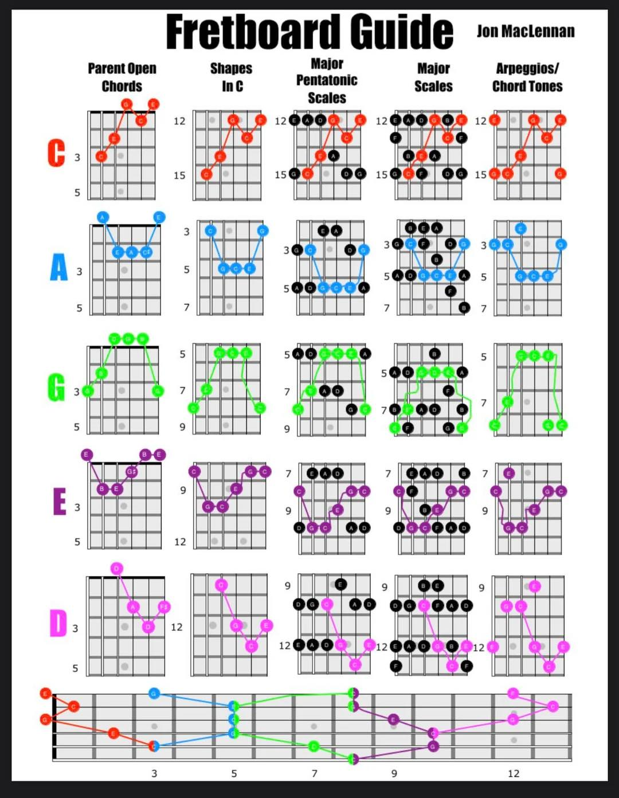

打破全指板迷思 · 整合和弦、音階與琶音的終極地圖
分類項目：指板架構與進階樂理
教學核心：CAGED 5大把位系統、五聲音階與自然大調音階對應、和弦內音 (Chord Tones)
實作重點：跨把位 C 和弦連接、五音階塊狀（Block）切換與即興應用
CAGED 系統將整把吉他指板分割為 5 個相互串連的開放和弦型態 (C-A-G-E-D)：

▲ 圖解：C-A-G-E-D 五大把位下，開放和弦、五聲音階、大調音階與琶音的垂直對應關係
圖表中每一個字母型態（Row）皆包含 4 個縱向對應的維度：
| 層級項目 | 圖表欄位 | 核心意義與應用 |
|---|---|---|
| 1. 母開放和弦 (Parent Open Chords) | 第 1 欄 | 最原始的 C、A、G、E、D 開放和弦指型，決定根音 (Root) 的相對位置。 |
| 2. C 音封閉和弦 (Shapes In C) | 第 2 欄 | 利用封閉（Barre）將 5 個型態推移至全指板，彈出相同聲響的 C 大三和弦。 |
| 3. 大調五聲音階 (Major Pentatonic) | 第 3 欄 | 以該和弦框型為基礎，延伸出的 5 音框架（1-2-3-5-6），為即興 Solo 的骨幹。 |
| 4. 自然大調音階 (Major Scales) | 第 4 欄 | 加入 4 音與 7 音（1-2-3-4-5-6-7），補全完整大調音階（如 F 與 B）。 |
| 5. 琶音與和弦內音 (Arpeggios) | 第 5 欄 | 精確定位根音 (1)、三音 (3) 與五音 (5)，作為旋律解決點 (Target Notes)。 |
吉他指板的根音位置決定了把位的銜接點，以 **C 大調 (C Major)** 為例：
• C Shape： 根音位於 5 弦 3 格與 2 弦 1 格。
• A Shape： 接續於第 3 格，根音同樣位於 5 弦 3 格，按法轉換為 A 型封閉。
• G Shape： 根音位於 6 弦 8 格與 1 弦 8 格。
• E Shape： 橫跨第 8 格，根音同為 6 弦 8 格，為最常用的封閉和弦型態。
口訣與記憶心法：
C ➔ A ➔ G ➔ E ➔ D ➔ C（12格後循環）。相鄰兩個把位必然共用相同的根音位置！
本週課後作業：
1. 熟記圖表中 5 個把位的五聲音階形狀。
2. 嘗試用 G 大調 (G Major) 重新推導一次 CAGED 五個把位的位置。